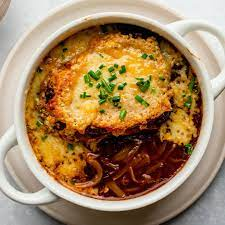

French Onion Soup

This is be a recipe to make a lovely french onion soup
Prep time: 20 Mins
Cook Time: 1 hr 10 mins
Ingredients
1/2 cup unsalted butter
4 onions - sliced
2 cloves of garlic - chopped
2 bay leaves
2 fresh thyme sprigs
Kosher salt
Black pepper
1 cup red wine
3 heaping tablespoons - all purpose flour
2 quarts beef broth
1 baguette
1/2 lb - grated Gruyere
Cooking Steps
1. Melt the 1/2 cup of butter in a large pot over medium heat
2. Add onions, garlic, bay leaves, thyme, salt and pepper to the pot, let for 25 mins until onions caramelize
3. Add 1 cup of red wine, reduce heat and simmer until wine has evaporated and onions are dry
4. Throw away bay leaves and thyme sprigs
5. Turn heat down to medium low
6. Sprinkle flour over onions and stir
7. Add beef broth and bring soup to simmer
8. Cook for approx. 10 mins
9. Add additional salt and pepper to taste
Plating Steps
1. Turn on oven broiler function
2. Cover a baking sheet with aluminum foil
3. Cut bagette into slice and place on top of baking sheet
4. Sprinkle slices of baguette with Gruyere
5. Broil for 3-5 mins
Serving Instructions
1. Serve soup in bowl
2. Add baguette slice